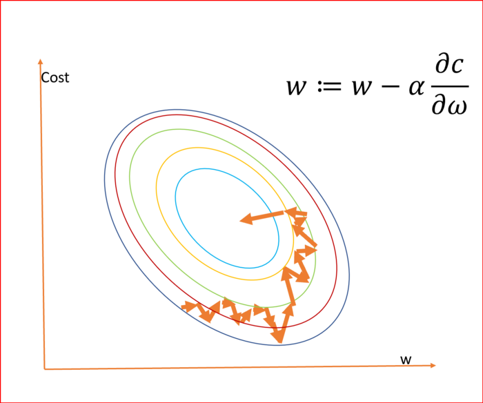
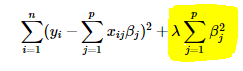

Decision Tree
Goal
The goal is to create a model that predicts the value of a target variable based on several input variables. An example is shown in the diagram. Each interior node corresponds to one of the input variables; there are edges to children for each of the possible values of that input variable. Each leaf represents a value of the target variable given the values of the input variables represented by the path from the root to the leaf.
Split
In the first split or the root, all attributes/features are considered and the training data is divided into groups based on this split. We have X features, so will have X candidate splits. Now we will calculate how much accuracy each split will cost us, using a function. The split that costs least is chosen. This algorithm is recursive in nature as the groups formed can be sub-divided using same strategy. Due to this procedure, this algorithm is also known as the greedy algorithm, as we have an excessive desire of lowering the cost. This makes the root node as best predictor/classifier.

Principle of Naive Bayes Classifier
A Naive Bayes classifier is a probabilistic machine learning model that’s used for classification task. The crux of the classifier is based on the Bayes theorem.
Bayes Theorem
Using Bayes theorem, we can find the probability of A happening, given that B has occurred. Here, B is the evidence and A is the hypothesis. The assumption made here is that the predictors/features are independent. That is presence of one particular feature does not affect the other. Hence it is called naive. Another assumption made here is that all the predictors have an equal effect on the outcome.

KNN steps:
1. Receive an unclassified data;
2. Measure the distance (Euclidian, Manhattan, Minkowski or Weighted) from the new data to all others data that is already classified;
3. Gets the K(K is a parameter that you difine) smaller distances;
4. Check the list of classes had the shortest distance and count the amount of each class that appears;
5. Takes as correct class the class that appeared the most times;
6. Classifies the new data with the class that you took in step 5;
Euclidean distance
The Euclidean distance between points p and q is the length of the line segment connecting them.
What is K?
K represents the number of training data points lying in proximity to the test data point which we are going to use to find the class.
Goal
The objective of the support vector machine algorithm is to find a hyperplane in an N-dimensional space (N — the number of features) that distinctly classifies the data points.

To separate the two classes of data points, there are many possible hyperplanes that could be chosen. Our objective is to find a plane that has the maximum margin, i.e the maximum distance between data points of both classes. Maximizing the margin distance provides some reinforcement so that future data points can be classified with more confidence.
In machine learning, the hinge loss is a loss function used for training classifiers. The hinge loss is used for "maximum-margin" classification, most notably for support vector machines.
Loss Function for SVM :
Given this understanding of the hinge loss function for a SVM, lets add a regularization term (L2 norm) to the cost. The intuition behind the regularization term is that we increase the cost penalty if the values for the weights are high. So while trying to minimize the cost, we not only adjust the weights, we also try to minimize the value of the weights and thereby reduce over fitting to the training data and make the model less sensitive to outliers. So with the added regularization term, the total cost function finally looks like:
Total cost = ||w²||/2 + C*(Sum of all losses for each observation)
Two great articles about SVM:
Support vector machines (intuitive understanding)Support Vector Machine — Introduction to Machine Learning Algorithms
What is Gradient Descent?
Gradient descent is an iterative machine learning optimization algorithm to reduce the cost function so that we have models that makes
accurate predictions. We get optimized weights using gradient descent.
Cost function(C) or Loss function
measures the difference between the actual output and predicted output from the model. Cost function are a convex function.
How can we find the optimized weights?
We randomly initialize all the weights for a neural network to a value close to zero but not zero.
We calculate the gradient, ∂c/∂ω which is a partial derivative of cost with respect to weight.
α is learning rate, helps adjust the weights with respect to gradient descent.

w is the weights for the neurons, α is learning rate, C is the cost and ∂c/∂ω is the gradient
We need to update the weights for all the neurons simultaneously.
Stochastic Gradient Descent
Stochastic Gradient Descent just picks one instance from training set at every step and update gradient only based on that single record. The advantage of Stochastic Gradient Descent is that the algorithm is much faster at every iteration. However, the algorithm produces less regular and stable learning path compared to Batch Gradient Descent. Instead of decreasing smoothly, the cost function will bounce up and down. After rounds of iterations, the algorithm may find a good parameter, but the final result is not necessary global optimal.

What is Logistic Regression?
Logistic regression is a classification algorithm used to assign observations to a discrete set of classes. Some of the examples of classification problems are Email spam or not spam, Online transactions Fraud or not Fraud, Tumor Malignant or Benign. Logistic regression transforms its output using the logistic sigmoid function to return a probability value.
Types of Logistic Regression:
1. Binary Logistic Regression: The categorical response has only two 2 possible outcomes. E.g.: Spam or Not
2. Multinomial Logistic Regression: Three or more categories without ordering. E.g.: Predicting which food is preferred more (Veg, Non-Veg, Vegan)
3. Ordinal Logistic Regression: Three or more categories with ordering. E.g.: Movie rating from 1 to 5
What is the Sigmoid Function?
In order to map predicted values to probabilities, we use the Sigmoid function. The function maps any real value into another value between 0 and 1. In machine learning, we use sigmoid to map predictions to probabilities.
Logistic Function:
Sigmoid Function Graph:

Formula of a sigmoid function:

Cost Function:

Goal
The goal of Regression is to explore the relation between the input Feature with that of the target Value and give us a continuous Valued output for the given unknown data.
Multiple regression Equation:
f(x) = Y = Predicted value/Target Value
x = Input
w = Gradient/slope/Weight
b = Bias
Bias
Bias refers to the error due to the model’s simplistic assumptions in fitting the data. A high bias means that the model is unable to capture the patterns in the data and this results in under-fitting.
How do we determine the weights?
The weights are are measured by MSE (Mean Squared Error) and adjusting them to get a best possible Linear line.
The ‘red line’ is our linear regression line or our predicted value(y’). And the ‘blue’ points are our given data or actual value. The average of square of distance from the
blue points(actual value) to the red line(predicted value) must be minimum to get the best fit regression line.
Thus can be represented as:

To gain optimal result we need to minimize MSE.
So to minimize this error or MSE we use gradient descent to find the weights after MSE or error rate calculation. Gradient Descent can be Equated as :

Now after we get the Gradient descent we need to update the weight every time until we get the best fitted value.
What is Regression?
Regression analysis is a form of predictive modelling technique which investigates the relationship between a dependent and independent variable.
The above definition is a bookish definition, in simple terms the regression can be defined as, “Using the relationship between variables to find the best fit line or the regression equation that can be used to
make predictions”.
What happens if we know that our data is correlated, but the relationship doesn’t look linear? So hence depending on what the data looks like, we can do a polynomial regression on the data to fit a polynomial equation to it.

Hence If we try to use a simple linear regression in the above graph then the linear regression line won’t fit very well. It is very difficult to fit a linear regression line in the above graph with a low value of error. Hence we can try to use the polynomial
regression to fit a polynomial line so that we can achieve a minimum error or minimum cost function. The general equation of a polynomial regression is:
Y=θo + θ₁X + θ₂X² + … + θₘXᵐ + residual error
Advantages of using Polynomial Regression:
Polynomial provides the best approximation of the relationship between the dependent and independent variable.
A Broad range of function can be fit under it.
Polynomial basically fits a wide range of curvature.
Disadvantages of using Polynomial Regression:
The presence of one or two outliers in the data can seriously affect the results of the nonlinear analysis.
These are too sensitive to the outliers.
In addition, there are unfortunately fewer model validation tools for the detection of outliers in nonlinear regression than there are for linear regression.
Explanation:
If your linear model contains many predictor variables or if these variables are correlated, the traditional OLS parameter estimates have large variance, thus making the model unreliable. This leads to an over-fitted model. A penalty term causes the regression
coefficients for these unimportant variables to shrink towards zero. This process allows the model to identify the variables strongly associated with the output variable, thereby reducing the variance.
Lasso Regression (Least Absolute Shrinkage and Selection Operator) adds “absolute value of magnitude” of coefficient as penalty term to the loss function.
If lambda is zero then we will get back OLS whereas very large value will make coefficients zero hence it will under-fit.

If lambda is zero then we will get back OLS (Ordinary Least Squares) whereas very large value will make coefficients zero hence it will under-fit.
Explanation:
Ridge regression adds “squared magnitude” of coefficient as penalty term to the loss function. Here the highlighted part represents L2 regularization element.

If lambda is zero then you can imagine we get back OLS. However, if lambda is very large then it will add too much weight and it will lead to under-fitting. Having said that it’s important how lambda is chosen. This technique works very well to avoid over-fitting issue.